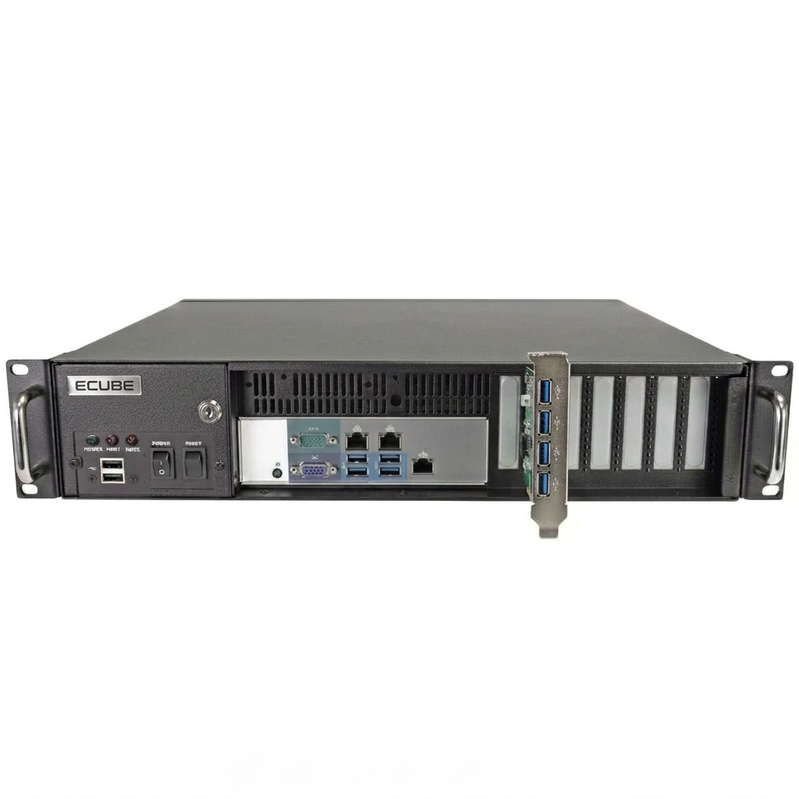
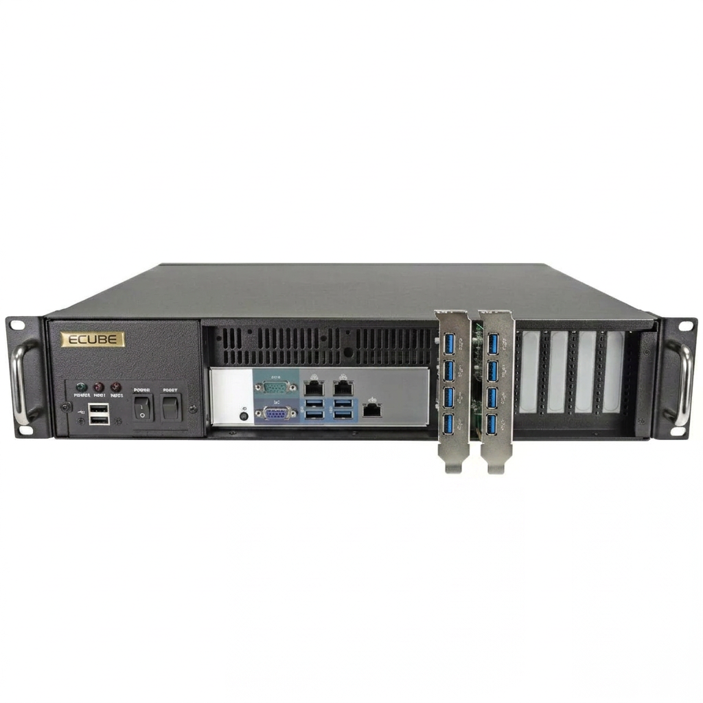
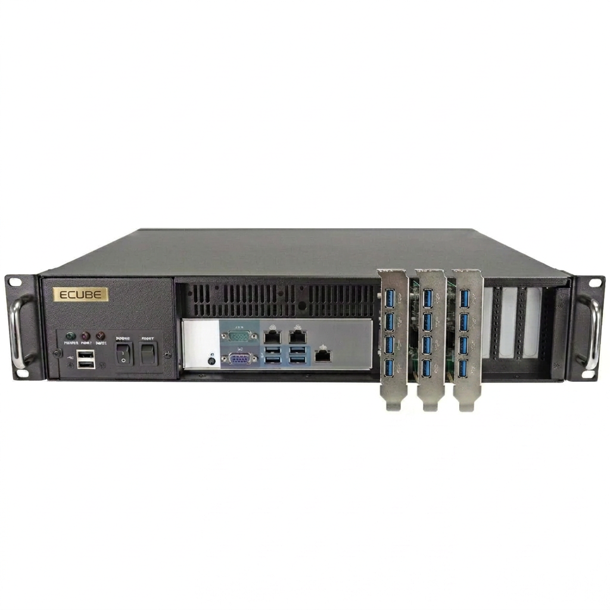

4-port base

Standard
Best for smaller teams and controlled project workflows.
One vertical PCI controller card provides four front-access USB ports.
Dedicated hardware
ECUBE appliances combine the governed export software with purpose-built hardware so teams can deploy a ready-to-use export station without workstation guesswork while keeping browser-based remote operations intact.
Appliances
ECUBE appliances combine secure workflow software with purpose-built hardware so teams can deploy a ready-to-use export station without workstation guesswork, while still supporting responsive browser use from desktop, tablet, and mobile devices for remote operational control.

Best for smaller teams and controlled project workflows.
One vertical PCI controller card provides four front-access USB ports.

Best for higher concurrency, service operations, and busy export schedules.
Two populated PCI controller slots provide eight front-access USB ports.

Best for large-scale multi-party deliveries and sustained throughput needs.
Three populated PCI controller slots provide twelve front-access USB ports.
Deployment Models
Appliance sizing changes hardware capacity and rollout posture, but the ECUBE browser workflow, role-based controls, audit records, and operational model remain consistent across deployments.
Keep the export station in a controlled location while authorized users continue to prepare and monitor work remotely.
Stage destination drives ahead of pickup, delivery, or scheduled export windows.
Support controlled export programs that need dedicated systems and clear deployment boundaries.
Contact
Use this page for dedicated hardware planning when you want ECUBE delivered as a validated export station.